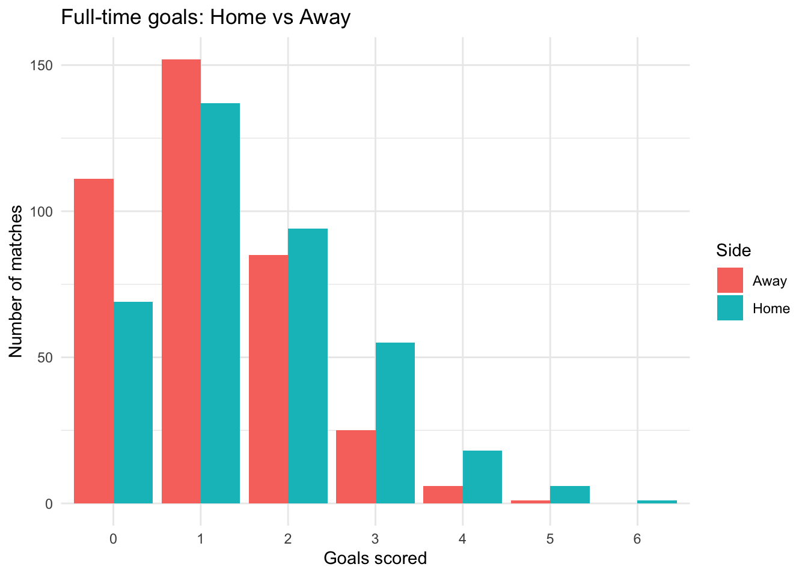

library(dplyr)
library(tidyr)
library(tidyverse)
library(ggplot2)
library(reactable)
library(plotly)Predicting Outcomes in La Liga 25/26
Here we have a dataset from the Spanish soccer league La Liga. It is the 25/26 season and it includes information in regards to match outcome. Our overall goal is to predict match outcomes. Therefore useful information for us will be “Date”, HomeTeam”, “AwayTeam”,
FTHG = number of goals scored by home team at full time, FTAG = number of goals scored by away team at full time, and FTR = Full time result (H=Home won, A= Away won, D= tie )
df<-read.csv("~/Desktop/R/season-2526.csv")|>
select(Date,HomeTeam,AwayTeam,FTHG,FTAG,FTR)
head(df) Date HomeTeam AwayTeam FTHG FTAG FTR
1 2025-08-15 Girona Vallecano 1 3 A
2 2025-08-15 Villarreal Oviedo 2 0 H
3 2025-08-16 Mallorca Barcelona 0 3 A
4 2025-08-16 Alaves Levante 2 1 H
5 2025-08-16 Valencia Sociedad 1 1 D
6 2025-08-17 Celta Getafe 0 2 AWe can create a frequency plot of Home and Away goals to visualize our data.
library(tidyr)
library(ggplot2)
levels_goals <- 0:max(df$FTHG, df$FTAG)
freq <- data.frame(
Goals = levels_goals,
Home = as.vector(table(factor(df$FTHG, levels = levels_goals))),
Away = as.vector(table(factor(df$FTAG, levels = levels_goals)))
)
freq_long <- pivot_longer(freq[, c("Goals", "Home", "Away")],
cols = c(Home, Away),
names_to = "Side", values_to = "Matches")
ggplot(freq_long, aes(x = factor(Goals), y = Matches, fill = Side)) +
geom_col(position = "dodge") +
labs(x = "Goals scored", y = "Number of matches",
title = "Full-time goals: Home vs Away") +
theme_minimal()
Looking at the frequency plot it appears to be Poisson-shaped for both Home and Away goals. This makes sense since home and away goals are typically modeled after a Poisson Distribution. Next, since we want to predict the outcome of a soccer match a way of doing this is by computing the expected home and away goals for each team. This can be done by using a Poisson Regression Model.
\[ \ln(\lambda) =b_0+b_1x_1+b_2x_2+... \] Once the coefficients are found we can then compute predicted values. \[ \lambda=e^{b_0 + b_1x_1+b_2x_2+...}=e^{b_0}e^{b_1x_1}e^{b_2x_2}... \]
dfnew<-df[1:370,]|>
select(HomeTeam,AwayTeam,FTHG,FTAG)
attach(dfnew)
poisdata<-rbind(data.frame(Home=1,Team = dfnew$HomeTeam,Opponent = dfnew$AwayTeam,Goals = dfnew$FTHG),data.frame(Home=0,Team= dfnew$AwayTeam,Opponent= dfnew$HomeTeam,Goals= dfnew$FTAG))
pois.mod<-glm(Goals~Home+Team+Opponent,family = poisson(link=log),data=poisdata)In the code above, the last 10 matches were excluded from the data for testing predictions on them. From the Poisson Regression Model we can compute the expected goals for each team of a match. This can be done using the ‘fitted()’ function.
exp_goal<-fitted(pois.mod)
exp_data<-cbind(poisdata,exp_goal)
head(exp_data) Home Team Opponent Goals exp_goal
1 1 Girona Vallecano 1 1.0338479
2 1 Villarreal Oviedo 2 2.3442911
3 1 Mallorca Barcelona 0 0.9779134
4 1 Alaves Levante 2 1.6195353
5 1 Valencia Sociedad 1 1.6478703
6 1 Celta Getafe 0 1.2263383After computing the expected goals our next step would be to predict the outcome of a match. Poisson Regression Model only gives us the expected goals a team will score in a match so we need a way of obtaining the probability of a scoreline in a match. This can be done via a Probability Matrix, where each entry is the probability of some given scoreline. This is done by multiplying the home and away goal probabilities. This assumes that home and away goals are independent. Dixon and Coles found under the assumption of independence that the probabilities of low scorelines (0-0,1-0,0-1, and 1-1) were misestimated. So they proposed the following:
\[ P(X_{i,j}=x,Y_{i,j}=y)= \tau_{\lambda,\mu}(x,y) \frac{e^{-\lambda}\lambda^x}{x!}\frac{e^{-\mu}\mu^y}{y!}\\ \] \[ \text{where } \tau_{\lambda,\mu}(x,y)=\begin{cases} 1-\lambda\mu\rho & \text{if } x=y=0,\\ 1+\lambda\rho & \text{if } x=0,y=1,\\ 1+\mu\rho & \text{if } x=1,y=0,\\ 1-\rho & \text{if } x=y=1,\\ 1 & \text{otherwise} \end{cases} \] \(\lambda\) is the home team’s expected goals, \(\mu\) is the away team’s expected goals, \(\rho\) controls how strongly the low scorelines are adjusted. The tau function is highly dependent on \(\rho\), so when \(\rho=0\) then \(\tau=1\). We then get back to the basic Poisson model. Let us define the Tau Function and two vectors for Expected home goals and away goals.
home_exp<-exp_goal[1:nrow(dfnew)]
away_exp<-exp_goal[(nrow(dfnew)+1):(nrow(dfnew)*2)]
tau <- Vectorize(function(x, y, lambda, mu, rho){
if (x == 0 & y == 0){return(1 - (lambda*mu*rho))
} else if (x == 0 & y == 1){return(1 + (lambda*rho))
} else if (x == 1 & y == 0){return(1 + (mu*rho))
} else if (x == 1 & y == 1){return(1 - rho)
} else {return(1)}
})
head(away_exp) 371 372 373 374 375 376
0.9373686 0.5483698 2.3583790 1.1237560 1.4580894 0.6719257 Since we obtained the expected goals via Poisson Regression Model we only have to find the value for rho which maximizes the log-likelihood. This can be done using Optimization Techniques. Our objective function is: \[ l(\rho) = \sum_{i=1}^{370} [\ln(\tau(x_i,y_i,\lambda_i,\mu_i,\rho) + \ln(\frac{e^{-\lambda_i}\lambda_i^{x_i}}{x_i!})+\ln(\frac{e^{-\mu_i}\mu_i^{y_i}}{y_i!})] \] Next we take the derivative of the objective function with respect to \(\rho\).
dtau <- Vectorize(function(x, y, lambda, mu, rho){
if (x == 0 & y == 0){return(-(lambda*mu)/(1 - (lambda*mu*rho)))
} else if (x == 0 & y == 1){return(lambda/(1 + (lambda*rho)))
} else if (x == 1 & y == 0){return(mu/(1 + (mu*rho)))
} else if (x == 1 & y == 1){return(-1/(1 - rho))
} else {return(0)}
})So we then have:
\[ \frac{\partial l}{\partial \rho}=\sum_{i=1}^{370}\frac{d}{d\rho}\ln{\tau(x_i,y_i,\lambda_i,\mu_i,\rho)} \] \[ \frac{d}{d\rho}\ln{\tau(x,y,\lambda,\mu,\rho)=\begin{cases} \frac{-\lambda\mu}{1-\lambda\mu\rho} & \text{if } x=y=0,\\ \frac{\lambda}{1+\lambda\rho} & \text{if } x=0,y=1,\\ \frac{\mu}{1+\mu\rho} & \text{if } x=1,y=0,\\ \frac{-1}{1-\rho} & \text{if } x=y=1,\\ 0 & \text{otherwise} \end{cases}} \]
gradRho<-function(rho){
sum(dtau(dfnew$FTHG,dfnew$FTAG,home_exp,away_exp,rho))
}We then use gradient ascent. We define rho and start at an initial value. We pick a step-size. Once our condition is met we then retrieve our Rho parameter.
rho <- 0.1 # starting value
stepsize <- 0.001 # step size
for (k in 1:10000){
step <- stepsize * gradRho(rho)
rho <- rho + step
if (abs(step) < 1e-8) break
}
RHO<-rho
RHO[1] -0.0104832Let’s test the 10 matches we excluded.
test<-df[371:380,2:3]
testhome<-test$HomeTeam
testaway<-test$AwayTeam
lambda <- predict(pois.mod, data.frame(Home=1, Team=testhome, Opponent=testaway), type='response')
mu <- predict(pois.mod,data.frame(Home=0,Team=testaway,Opponent=testhome),type='response')By summing up the diagonal entries of the Probability Matrix we can check the Probability of a draw. To find the probability of the home team winning, sum up the lower triangle. For the away team, sum up the upper triangle. We will create a table and do this for each match. Where we will show the probability of the home team winning, away team winning, or a draw.
maxgoal <- 8
resultsbasic<-data.frame(Home = testhome, Away = testaway,
HomeWin = NA, Draw = NA, AwayWin = NA)
resultsdc <- data.frame(Home = testhome, Away = testaway,
HomeWin = NA, Draw = NA, AwayWin = NA)
for (i in 1:10) {
pm <- dpois(0:maxgoal, lambda[i]) %*% t(dpois(0:maxgoal, mu[i]))
resultsbasic$HomeWin[i] <- sum(pm[lower.tri(pm)])
resultsbasic$Draw[i] <- sum(diag(pm))
resultsbasic$AwayWin[i] <- sum(pm[upper.tri(pm)])
}
for (i in 1:10) {
pm <- dpois(0:maxgoal, lambda[i]) %*% t(dpois(0:maxgoal, mu[i]))
pm[1:2, 1:2] <- pm[1:2, 1:2] *
matrix(tau(c(0,1,0,1), c(0,0,1,1), lambda[i], mu[i], RHO), nrow = 2)
resultsdc$HomeWin[i] <- sum(pm[lower.tri(pm)])
resultsdc$Draw[i] <- sum(diag(pm))
resultsdc$AwayWin[i] <- sum(pm[upper.tri(pm)])
}
resultsbasic Home Away HomeWin Draw AwayWin
1 Alaves Vallecano 0.4082611 0.2972193 0.29451516
2 Betis Levante 0.6379039 0.1974447 0.16424374
3 Celta Sevilla 0.5943181 0.2155621 0.18991210
4 Espanol Sociedad 0.4240554 0.2385609 0.33731053
5 Getafe Osasuna 0.3860542 0.3411624 0.27278255
6 Girona Elche 0.4105775 0.2669494 0.32245633
7 Mallorca Oviedo 0.5918514 0.2512585 0.15685038
8 Real Madrid Ath Bilbao 0.7805922 0.1454003 0.07289599
9 Valencia Barcelona 0.1393376 0.1824351 0.67758818
10 Villarreal Ath Madrid 0.4745266 0.2393795 0.28601888resultsdc Home Away HomeWin Draw AwayWin
1 Alaves Vallecano 0.4068615 0.3000185 0.29311557
2 Betis Levante 0.6369410 0.1993705 0.16328085
3 Celta Sevilla 0.5932544 0.2176896 0.18884837
4 Espanol Sociedad 0.4229136 0.2408444 0.33616878
5 Getafe Osasuna 0.3846975 0.3438760 0.27142577
6 Girona Elche 0.4092476 0.2696093 0.32112638
7 Mallorca Oviedo 0.5906796 0.2536021 0.15567856
8 Real Madrid Ath Bilbao 0.7798683 0.1468480 0.07217216
9 Valencia Barcelona 0.1384491 0.1842122 0.67669962
10 Villarreal Ath Madrid 0.4733570 0.2417188 0.28484923Winner<-df[371:380,6]
cbind.data.frame(resultsbasic,Winner) Home Away HomeWin Draw AwayWin Winner
1 Alaves Vallecano 0.4082611 0.2972193 0.29451516 A
2 Betis Levante 0.6379039 0.1974447 0.16424374 H
3 Celta Sevilla 0.5943181 0.2155621 0.18991210 H
4 Espanol Sociedad 0.4240554 0.2385609 0.33731053 D
5 Getafe Osasuna 0.3860542 0.3411624 0.27278255 H
6 Girona Elche 0.4105775 0.2669494 0.32245633 D
7 Mallorca Oviedo 0.5918514 0.2512585 0.15685038 H
8 Real Madrid Ath Bilbao 0.7805922 0.1454003 0.07289599 H
9 Valencia Barcelona 0.1393376 0.1824351 0.67758818 H
10 Villarreal Ath Madrid 0.4745266 0.2393795 0.28601888 Hcbind.data.frame(resultsdc,Winner) Home Away HomeWin Draw AwayWin Winner
1 Alaves Vallecano 0.4068615 0.3000185 0.29311557 A
2 Betis Levante 0.6369410 0.1993705 0.16328085 H
3 Celta Sevilla 0.5932544 0.2176896 0.18884837 H
4 Espanol Sociedad 0.4229136 0.2408444 0.33616878 D
5 Getafe Osasuna 0.3846975 0.3438760 0.27142577 H
6 Girona Elche 0.4092476 0.2696093 0.32112638 D
7 Mallorca Oviedo 0.5906796 0.2536021 0.15567856 H
8 Real Madrid Ath Bilbao 0.7798683 0.1468480 0.07217216 H
9 Valencia Barcelona 0.1384491 0.1842122 0.67669962 H
10 Villarreal Ath Madrid 0.4733570 0.2417188 0.28484923 H